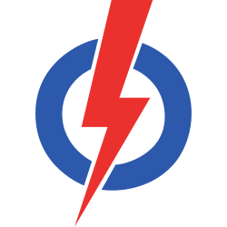
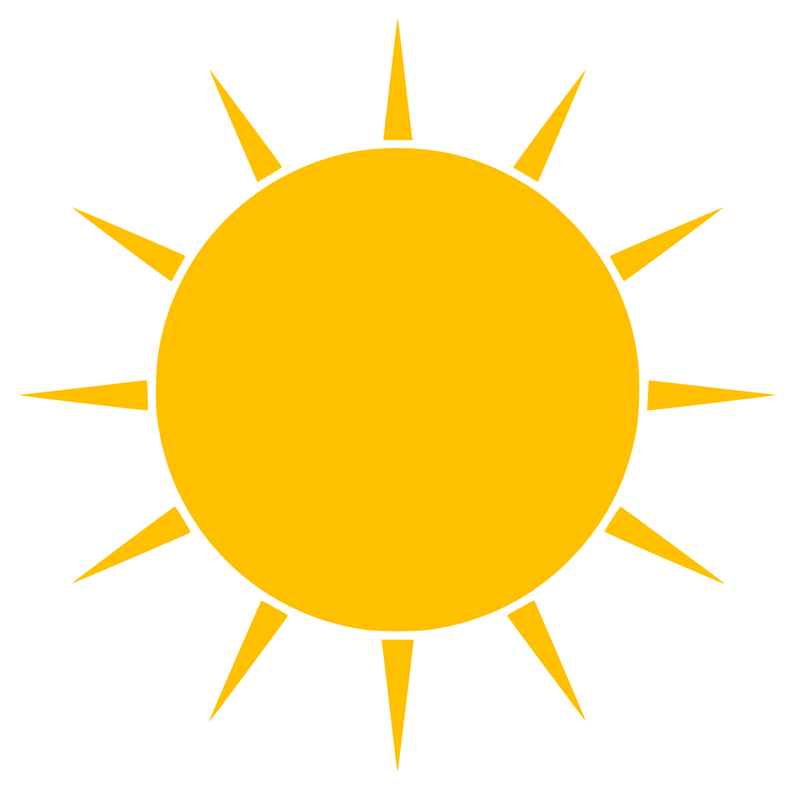

Singapore GE2020
2,653,942 Electors
93 MPs
14 SMCs | 17 GRCs
Overview
SMCs
GRCs
Parties
Winner
Peoples Action Party
83 Seats
Workers Party
10 Seats
PM Lee posted 29 times on Facebook and garnered 390,342 total interactions -Between June 22 and July 1.
Of the four main parties, WP posted the least number of times on Facebook (47) but garnered the highest number of interactions.
74 New Candidates
118 Old Candidates
Bukit Batok SMC
Bukit Panjang SMC
Hougang SMC
Hong Kah North SMC
Kebun Baru SMC
Mountbatten SMC
MacPherson SMC
Marymount SMC
Pioneer SMC
Potong Pasir SMC
Punggol West SMC
Radin MasSMC
Yio Chu kang SMC
Yuhua SMC
No of Electors
Total votes cast
Total valid votes
Spoilt Votes
Aljunied GRC
Ang Mo Kio GRC
Bishan-Toa Payoh GRC
Chua Chu Kang GRC
East Coast GRC
Holland-Bukit Timah GRC
Jalan Besar GRC
Jurong GRC
Marine Parade GRC
Marsiling-Yew Tee GRC
Nee Soon GRC
Pasir Ris-Punggol GRC
Sembawang GRC
Senkang GRC
Tampines GRC
Tanjong Pagar GRC
West Coast GRC
No of Electors
Total votes cast
Total valid votes
Spoilt Votes
Party
Candidates fielded
Total seats won

PAP
93
83
PSP
24
0
WP
21
10
SDP
11
0
NSP
10
0
PV
10
0

RP
6
0
RDU
5
0
SDA
5
0
SPP
5
0
INDP
1
0
192 Candidates
40 Female 152 Male
Age
Youngest
23
Choo Shuan Ming-PSP
Oldest
80
Tan Cheng Bok-PSP
Median Age
49